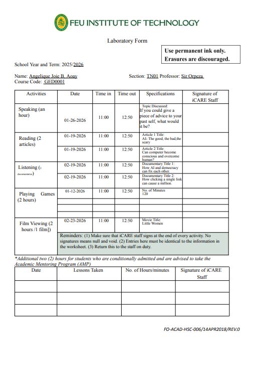
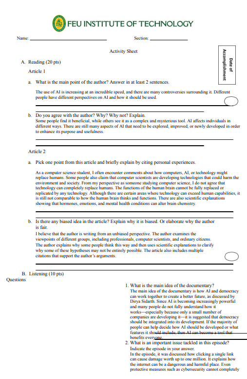
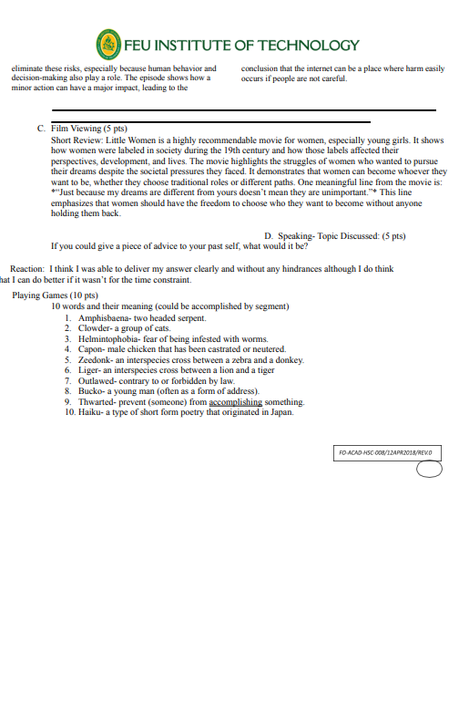
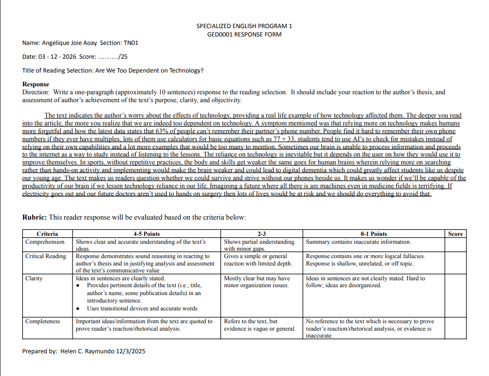
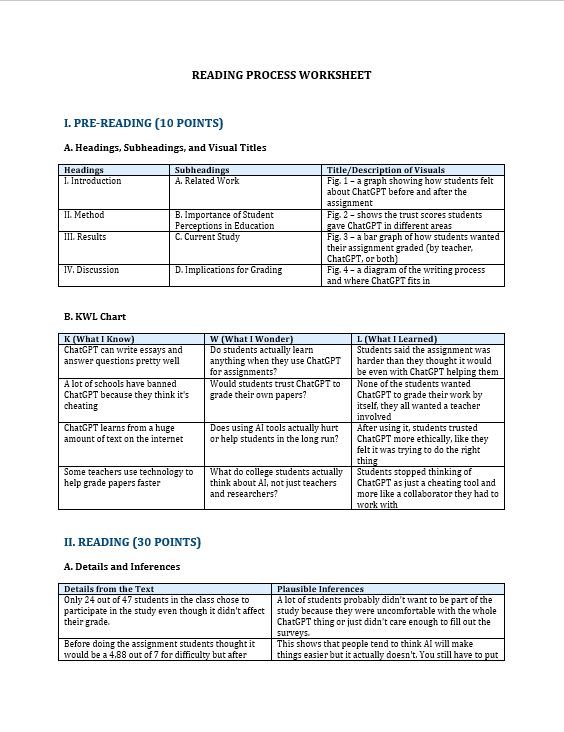
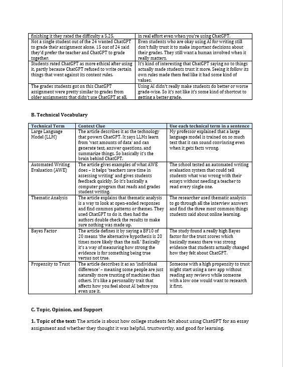
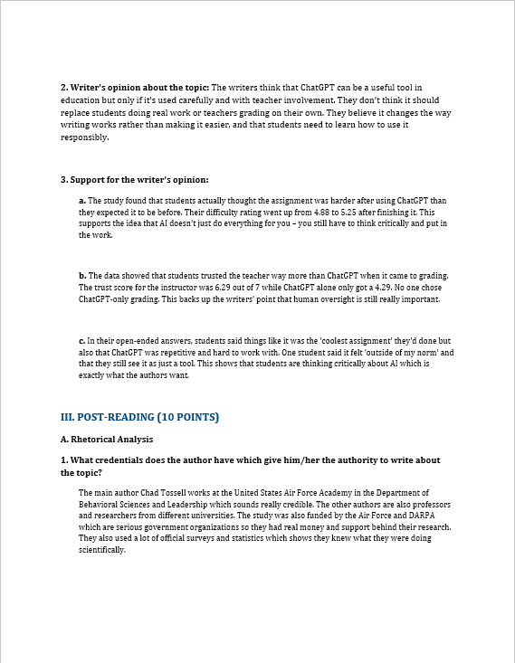
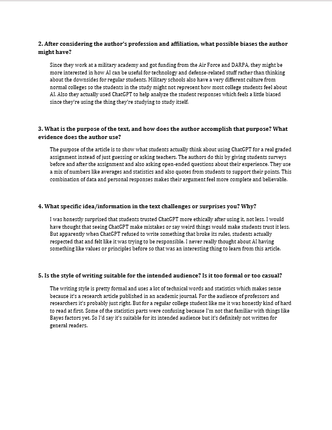
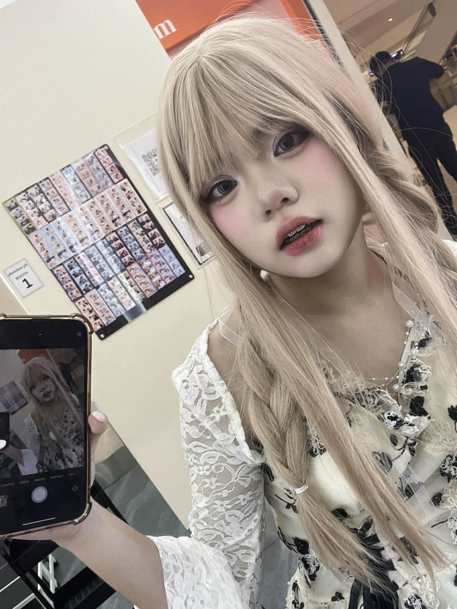

Jelly's GED0001 Project ✿








GED0001, or Reading and Writing Course, is a required subject for Computer Science students. As the semester comes to an end, we were tasked to complete a final project that serves as a culminating work—something that we may remember creating even after the course is finished. This final project includes a reflection on everything we learned, experienced, and discussed throughout the semester. In this reflection, I will divide my thoughts into four parts: my experience with the actual lessons, my experience during classes, my experience with our professor, and lastly, my experience while creating my final project.
> I used to love creative writing and reading, but as I grew older, I gradually lost interest in it. I think this happened because I started to believe that I was better at other things rather than literary work. At first, I thought this subject would be easier compared to the other courses I was taking, and I was right. It felt like a breather during the times when I felt burned out from all the math and programming classes I had to study. Most of the lessons were essentially a review of topics we had already encountered during our high school years, which made them easier to understand and comprehend. Overall, the lectures and lessons were simple, helpful, and easy to follow.
I always looked forward to our face-to-face classes because the atmosphere was very chill and relaxing. It was a time for us to openly express our thoughts and share experiences that related to the topics we were discussing. Everyone seemed comfortable engaging with one another, whether during group activities or class discussions. This dynamic felt like a refreshing break from other courses that often felt more demanding and intense.
When I first saw our professor, I immediately felt that I was going to enjoy the class. You could tell from his aura that he was someone who made learning enjoyable. I truly commend our professor for allowing us to freely express our thoughts and for genuinely listening to every student’s stories and experiences. He also made an effort to get to know us individually, which is quite rare considering that we are already college students and most professors tend to keep a professional distance from their classes. Because of this, I can confidently say that he is a great professor, and I would be happy to have him again in future semesters.
This final project marks the conclusion of our semester in GED0001. Initially, I thought of creating a simple PowerPoint presentation for my digital portfolio because of the overwhelming number of pending tasks we had during finals week. However, after seeing the creative works of my classmates, I realized that this was also an opportunity for me to express myself. I began thinking of different ways to make my project both fun and reflective of who I am, while still staying connected to the subject. That is how I eventually came up with the idea of Grammarlings.
Overall, my experience in GED0001 was both enjoyable and meaningful. The course not only refreshed my knowledge of reading and writing but also reminded me of how creative expression can still be a part of my academic journey. Through the lessons, class discussions, and activities, I was able to reflect on my thoughts and experiences while also learning from the perspectives of others. I am grateful for the supportive environment created by both my classmates and our professor, which made the class engaging and memorable. As the semester ends, I will carry the lessons and experiences from this course with me, especially the reminder that creativity and self-expression can still exist even in a field as technical as Computer Science.

Angelique Joie Aoay is a 19-year-old Filipino born on February 3, 2007. She is currently pursuing a degree in Computer Science with a specialization in Software Engineering at Far Eastern University – Institute of Technology. As a student in the field of technology, she is passionate about continuously learning and developing her skills in programming, problem-solving, and creating innovative digital solutions.